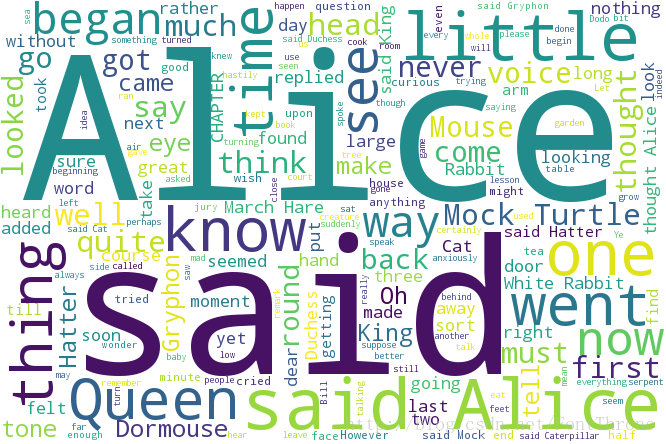

Python Programming
Lecture 16 Mozart's Dice, Wordcloud, ASCII art
16.1 Mozart's Dice

import wave
from random import randint
def randomAudioFiles():
# array of filenames to return
infiles = []
count = 1
# creates list of 16 randomly chosen measures for the minuet
while count < 17 :
file = "waves/M" + str(count)
rollOne = randint(1, 6)
rollTwo = randint(1, 6)
rollTotal = rollOne + rollTwo
file += "-" + str(rollTotal) + ".wav"
infiles.append(file)
count += 1
# creates list of 16 randomly chosen measures for the trio
while count < 33 :
file = "waves/T" + str(count)
roll = randint(1, 6)
file += "-" + str(roll) + ".wav"
infiles.append(file)
count += 1
return infiles
def audioGenerator():
# files to read in and file to output to
infiles = randomAudioFiles();
outfile = "dice.wav"
# reads through each .wav file
# gets the parameters and frames of each .wav file
data = []
for infile in infiles:
w = wave.open(infile, 'rb')
print(w.getparams())
data.append([w.getparams(), w.readframes(w.getnframes())])
w.close()
# writes to the outfile
# generates the combined .wav file and returns it
output = wave.open(outfile, 'wb')
output.setparams(data[0][0])
for val in data:
output.writeframes(val[1])
output.close()
#composition = wave.open("dice.wav");
return infiles
16.2 Wordcloud

Install WordCloud
- Python 3.9安装问题的解决方案
- Win系统安装方式：WordCloud的安装文件下载地址
-
pip install (安装文件的绝对路径) - Mac系统安装方式：先在终端输入如下命令
-
xcode-select --installpip install wordcloud
A long string
from wordcloud import WordCloud
string = 'Importance of relative word frequencies for font-size.\
With relative_scaling=0, only word-ranks are considered. With \
relative_scaling=1, a word that is twice as frequent will have \
twice the size. If you want to consider the word frequencies \
and not only their rank, relative_scaling around .5 often looks good.'
font = r'C:\Windows\Fonts\Arial.TTF'
wc = WordCloud(font_path=font, # Chinese
background_color='white',
width=1000,
height=800,
).generate(string)
wc.to_file('s1.png') # save figure
from matplotlib import pyplot as plt
plt.imshow(wc) # show figure by plt
plt.axis('off')
plt.show()
Loading text file
from wordcloud import WordCloud
filename = 'Harry Potter.txt'
with open(filename, encoding="utf-8") as f_obj:
contents = f_obj.read()
#font = r'C:\Windows\Fonts\Arial.TTF'
font = "/System/Library/Fonts/STHeiti Medium.ttc"
wc = WordCloud(font_path=font,
background_color='white',
width=1000,
height=800,
).generate(contents)
wc.to_file('s2.png')
Loading Chinese text file
from wordcloud import WordCloud
filename = 'sanguo.txt'
with open(filename , encoding="utf-8") as f_obj:
contents = f_obj.read()
#font = r'C:\Windows\Fonts\Arial.TTF'
font = "/System/Library/Fonts/STHeiti Medium.ttc"
wc = WordCloud(font_path=font,
background_color='white',
width=1000,
height=800,
).generate(contents)
wc.to_file('s3.png')
Using jieba
from wordcloud import WordCloud
import jieba
filename = 'sanguo.txt'
with open(filename , encoding="utf-8") as f_obj:
contents = f_obj.read()
s = jieba.lcut(contents)
txt = " ".join(s)
#font = r'C:\Windows\Fonts\Arial.TTF'
font = "/System/Library/Fonts/STHeiti Medium.ttc"
wc = WordCloud(font_path=font,
background_color='white',
width=1000,
height=800,
).generate(txt)
wc.to_file('s4.png')
Stopwords
中文常用停用词表
from wordcloud import WordCloud
import jieba
filename = 'sanguo.txt'
with open(filename, encoding="utf-8") as f_obj:
contents = f_obj.read()
def sw(filename):
with open(filename, encoding="utf-8") as f_obj:
x = file.readlines()
y = [word.strip() for word in x]
return y
name_list = ['baidu_stopwords.txt', 'cn_stopwords.txt',
'hit_stopwords.txt','scu_stopwords.txt']
stop_word = []
for x in name_list:
stop_word.extend(sw(x))
stop_word = list(set(stop_word))
s = jieba.lcut(contents)
result = [word for word in s if word not in stop_word]
s = [word for word in result if len(word)>1]
txt = " ".join(s)
#font = r'C:\Windows\Fonts\Arial.TTF'
font = "/System/Library/Fonts/STHeiti Medium.ttc"
wc = WordCloud(font_path=font,
background_color='white',
width=1000,
height=800,
).generate(txt)
wc.to_file('s5.png')
16.3 ASCII art
from moviepy.editor import *
clip = VideoFileClip("ultraman.flv")
clip = clip.subclip(0, 8) #剪切前8秒
clip.write_gif("video.gif") #保存为gif
import os
exist = os.path.exists('images') # 判断是否存在文件夹
if not exist:
os.mkdir('images')
else:
pass
from PIL import Image
#将gif的每一帧保存为png图片到images文件夹
def get_imgs():
gif = Image.open('video.gif')
try:
gif.save(f"images/{gif.tell()}.png")
while True:
gif.seek(gif.tell()+1)
gif.save(f"images/{gif.tell()}.png")
except Exception as e:
print("finished")
get_imgs()
图片转ascii图
- GB色彩模式是通过对红(R)、绿(G)、蓝(B) 三个颜色通道的变化以及它们相互之间的叠加来得到各式各样的颜色 通常情况下，RGB各有256级亮度 其区间为[0,255] 也就是256个阶梯
- 灰度图是指只含亮度信息，不含色彩信息的图象， 就象我们平时看到的黑白照片：亮度由暗到明，变化是连续的。
- rgb向灰度值转换的公式是: gray = 0.299r + 0.587g + 0.114b
- 所以灰度值的区间是 [0,(0.299+0.587+0.114)*255] ~> [0,255]
# 设置要用的ascii码
ASCII_CHAR = "$@B%8&WM#*oahkbdpqwmZO0QLaCJUYXzczjhdhsdavunxrjft/\|()1{}[]?-_+~<>i!lI;:,\"^`'."
def rgb_to_ascii(r, g, b, alpha=256):
# 通过灰度值的映射
# 将没一个rgb值对应成一个ascii符
# 也就实现了rgb -> ascii
# 当像素透明时，直接返回一个空白字符串
if alpha == 0:
return ' '
length = len(ASCII_CHAR)
gray = int(0.299 * r + 0.587 * g + 0.114 * b)
# 灰度值和字符串的对应关系
# 每个字符串对应灰度值的区间是
unit = (256.0 + 1)/length
# 找到灰度值所对应字符串的下标
index = int(gray/unit)
return ASCII_CHAR[index]
def image_to_ascii_chart(image):
width, height = image.size
text = ''
for y in range(0,height,10):
line = ''
for x in range(0,width,5):
# 找到对应位置的像素点
dot = image.getpixel((x, y))
line += rgb_to_ascii(*dot)
text += line
text += '\n'
return text
# 每个图转化为字符串
files = os.listdir('images')
xxx = []
for i in range(0,len(files)):
pic = Image.open(f'images/{i}.png').convert('RGB')
xxx.append(image_to_ascii_chart(pic))
def Start():
os.system("clear")
print('Press any key...')
input()
os.system("clear")
i=0
print(xxx[i])
c = input()
while c != 'q':
os.system("clear")
print(xxx[i])
c = input()
i=i+1
print('End')
Start()
Summary
- Examples